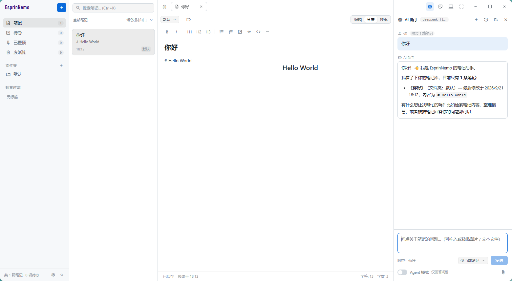
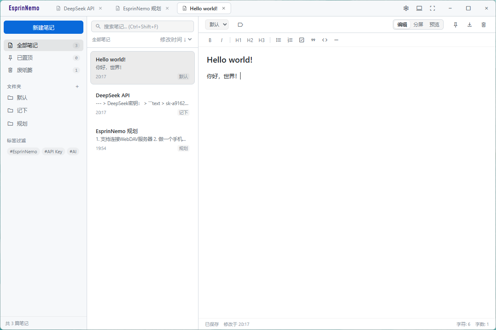
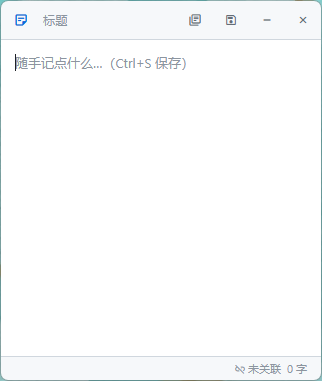

纯 Markdown 存储
每篇笔记保存为 data/notes/{id}.md，元数据内嵌在文件开头的注释里，可直接用任意编辑器打开。
一个本地优先、离线可用的极简 Markdown 笔记应用。
没有账号、没有云同步，笔记就是磁盘上的 .md 文件；
内置的 AI 助手是唯一的联网功能，不配置就不会发起任何外部请求。
安装版与便携版可选 · 自动更新默认开启，随时可在设置中关闭

下面都是应用的真实截图。浅色 / 深色主题、强调色与应用名颜色都能自行更换， 这里分别是侧边栏展开时的主界面，与常驻屏幕右下角的小本本。


该有的都有，不该有的一个也没有。没有账号体系，也没有云同步——数据始终在你自己手里。
每篇笔记保存为 data/notes/{id}.md，元数据内嵌在文件开头的注释里，可直接用任意编辑器打开。
标题栏标签页同时打开多篇笔记，随时切换；标签栏用图标区分笔记与待办，编号空间两者共用。
侧边栏按文件夹归类、按标签过滤，内置「笔记 / 待办 / 已置顶 / 废纸篓」四个入口，支持修改时间、创建时间与标题排序。
独立的待办入口，卡片左侧带勾选框，已完成的显示为删除线。与笔记同一套存储格式、同一个编辑器、同一个废纸篓。
编辑 / 分屏 / 预览一键切换，分屏即时对照内置的轻量 Markdown 渲染，配合加粗、标题、列表、引用、代码块等格式化工具栏。
屏幕右下角的便利贴小窗口，始终置顶、自动保存，Ctrl+S 一键存成新笔记或写回关联的那篇。
浅色 / 深色 / 跟随系统三态切换，强调色可选预设色板或自定义取色，界面字体与文档字体分开设置，西文与 CJK 分别回退。
托盘图标右键即可新建笔记 / 待办、唤出小本本或进入设置；托盘在时关闭窗口只是收起界面，应用继续在后台运行。
启动后自动检查更新源并在后台下载，装好后询问是否重启安装；升级向导只有一个进度条，笔记与数据位置记录都不受影响。直连 GitHub 慢的话，可以在设置里打开 gh-proxy 加速检查与下载。
在设置里填上 API 站点、API Key 与模型即可使用，兼容 OpenAI 协议的站点都能直接接。 配置留空时，应用不会发起任何外部请求。
不上传、无遥测，除主动使用 AI 助手与默认开启的自动更新检查外不发起任何网络请求。
data/，互不干扰。
notes/ 里丢一个 .md，启动时会被当成新笔记载入并补齐元数据。
data/ ├── notes/ # 笔记：{id}.md ├── todos/ # 待办：{id}.md ├── ai_chats/ # AI 对话：{id}.json ├── config.json # 界面与功能配置 └── scratchpad.json # 小本本内容
常用操作全部对应到快捷键，小本本窗口另有独立的一套。
| 快捷键 | 功能 |
|---|---|
| Ctrl + N | 新建笔记 |
| Ctrl + Shift + N | 新建待办 |
| Ctrl + Shift + F | 聚焦搜索框 |
| Ctrl + S | 保存当前笔记或待办 |
| Ctrl + S（小本本窗口） | 未关联笔记时新建为笔记并关联，已关联时保存回那篇笔记 |
| Ctrl + O（小本本窗口） | 打开笔记选择面板 |
| Tab（编辑器内） | 插入缩进 |
主要面向 Windows；点下面的按钮前往 GitHub Releases，安装版与便携版都在里面。
可选安装位置与数据存放位置；便携版每次启动解压到临时目录运行，不写注册表。
启动后自动检查更新源并后台下载，也可在设置中随时手动检查、下载与安装。
没有遥测与账号体系，笔记始终是磁盘上的 .md 文件。
# 环境要求：Node.js 与 bun bun install bun run start # 开发运行 bun run build # 打包 Windows 安装包与便携版